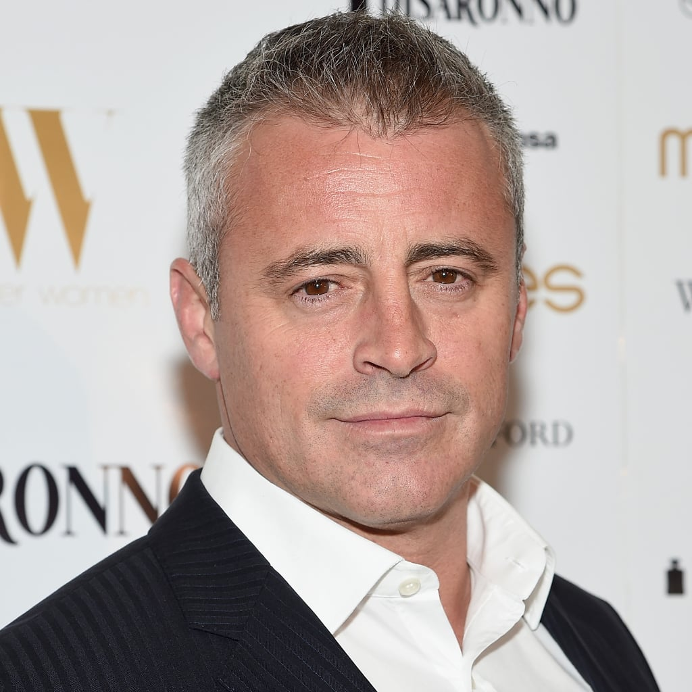

Jennifer Aniston as Rachel Green

In Friends wordt het karakter Rachel Green (1 van de hoofdpersonen) gespeeld door Jennifer Aniston. Jennifer Aniston is een Amerikaanse actrice, regisseur, producent en zakenvrouw. Ze is geboren op 11 februari 1969. Jennifer Aniston is de dochter van acteur John Aniston en actrice Nancy Dow. Aniston is opgegroeid in Sherman Oaks, California. Ze trouwde met Bratt Pitt op 29 juli 2000, en scheidde van Brett Pitt op 2 oktober 2005. Ook is ze getrouwd geweest met Justin Theroux, die zijn eind 2017 uit elkaar gegaan. Op de set van Friends is ze ook beste vrienden geworden met Courteney Cox.
Courteney Cox as Monica Geller
In Friends wordt het karakter Monica Geller (1 van de hoofdpersonen) gespeeld door Courteney Cox. Courtney Cox is een Amerikaanse actrice. Ze is geboren op 15 juni 1964. Courtney Cox heeft oorspronkelijk auditie gedaan voor de rol van Rachel Green in de serie Friends, maar wordt uiteindelijk gecast voor de rol van Monica Geller. Op de set van Friends is ze ook beste vrienden geworden met Jennifer Aniston. Courteney trouwde met acteur David Arquette op 12 juni 1999. Samen met David kreeg ze een dochter Coco op 13 juni 2004. Na elf jaar scheidde ze van haar man David Arquette. In juni 2014 maakte Courteney bekend dat ze verloofd was met Johnny McDaid.
Lisa Kudrow as Phoebe Buffay
In Friends wordt het karakter Phoebe Buffay (1 van de hoofdpersonen) gespeeld door Lisa Kudrow. Lisa Kudrow is een Amerikaanse actrice. Ze is geboren op 30 juli 1963. Lisa wilde vroeger altijd dokter worden, net als haar vader. Lisa’s eerste rol was Ursula, de serveerster in Mad About You. Dit leidde tot haar rol als Phoebe in Friends, die weer de tweeling zus was van Ursula die ook in Friends regelmatig opduikt. Lisa trouwde met Michel Stern op 27 mie 1995. Samen kregen ze een zoon, Julian Murray Stern. Ze wordt zwanger tijdens het 4e seizoen van Friends, dus haar zwangerschap moet in de serie geschreven worden.
Matthew Perry as Chandler Bing
In Friends wordt het karakter Chandler Bing (1 van de hoofdpersonen) gespeeld door Matthew Perry. Matthew Perry is een Amerikaans-Canadese acteur. Hij is geboren op 19 augustus 1969. Matthew werd geboren in de VS, maar groeide op in Ottowa, Canada. Hij is de zoon van de acteur John Bennett Perry en Suzanne Perry Morrison. Zelf moest Matthew kiezen tussen een carrière als acteur of als proftennisser. Hij besloot uiteindelijk toch te gaan voor een acteercarrière. Hij mist een deel van zijn rechtermiddelvinger als gevolg van een ongeluk met een deur. Matthew Perry deed ook een lange tijd aan drugs. Hij herinnerd zich ook 3 hele seizoenen van Friends niet meer, door de drugs. Hij maakte november 2020 ook bekend dat hij verloofd is met Molly Hurwitz.
Matt LeBlanc as Joey Tribbiani
In Friends wordt het karakter Joey Tribbiani (1 van de hoofdpersonen) gespeeld door Matt LeBlanc. Matt LeBlanc is een Amerikaanse acteur. Hij is geboren op 25 juli 1967. Hij was nadat de serie Friends was geëindigd een serie aangeboden: Joey. Hij trouwde op 3 mei 2003 met zijn vriendin Melissa McKnight. Samen hebben zij een dochter gekregen, Marina Pearl LeBlanc. In 2006 is het paar gescheiden, omdat Matt een affaire had met een van zijn medespelers van de serie Joey.
David Schwimmer as Ross Geller

In Friends wordt het karakter Ross Geller (1 van de hoofdpersonen) gespeeld door David Schwimmer. David Schwimmer is een Amerikaanse acteur, televisieregisseur en producent. hij is geboren op 2 november 1966. Hij groeide op in Californië en studeerde theater aan de Northwestern University. David is ook medeoprichter van de lookingglass theatre company in Chicago. Hij heeft zelf ook een aantal afleveringen geregisseerd van Friends, de spin-off Joey en de Amerikaanse serie Little Britain. Hij is in 2010 getrouwd met Zoë Buckman. Samen kregen ze een dochter, Cleo. Ze zijn gescheiden in 2017.